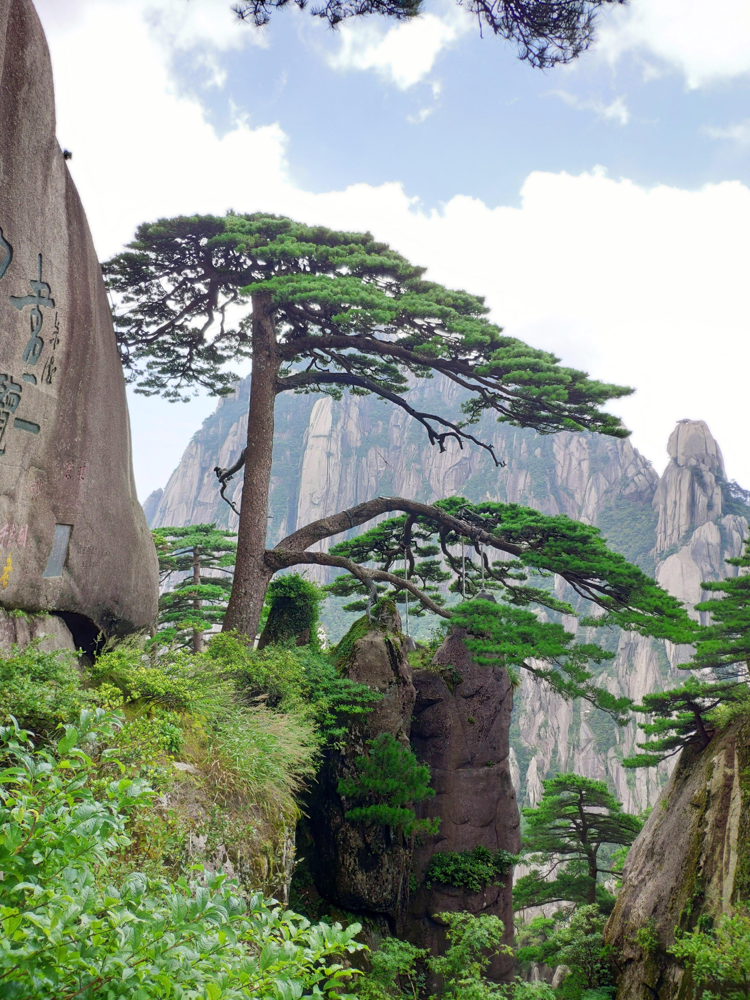
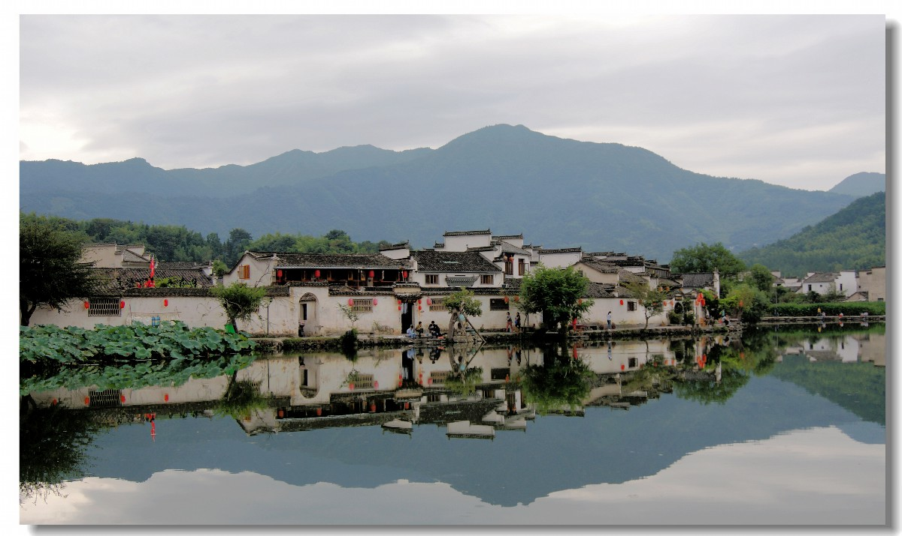
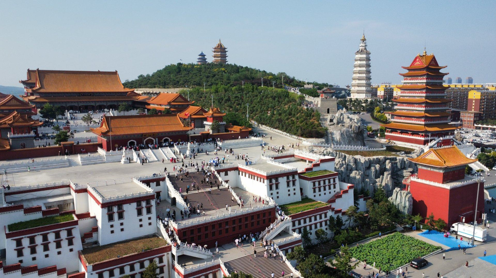
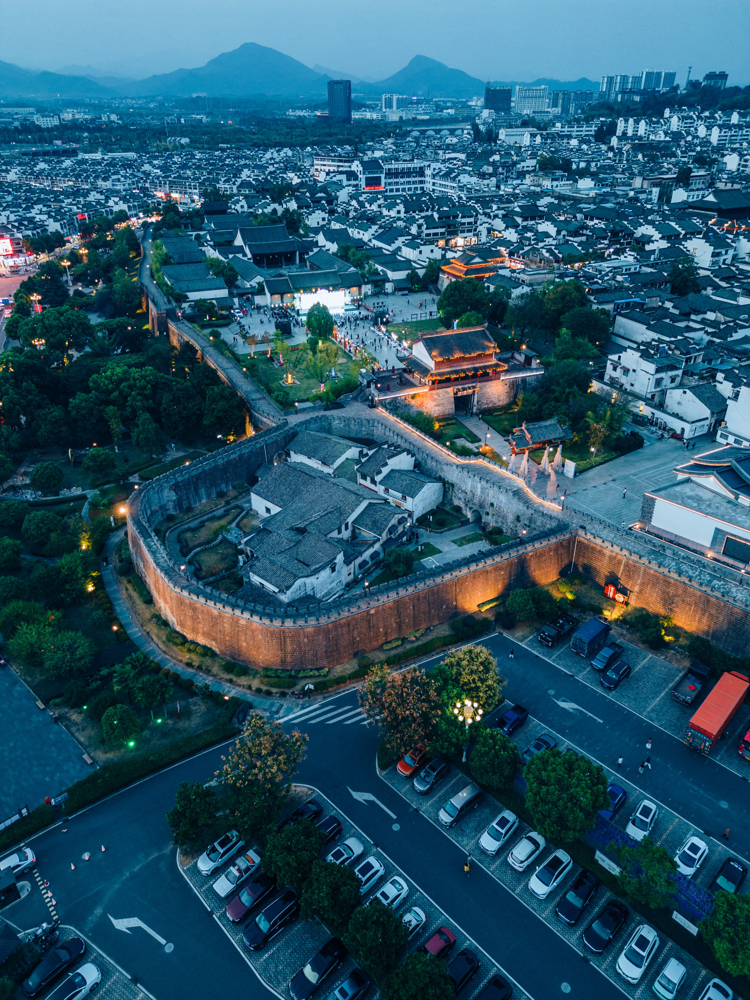
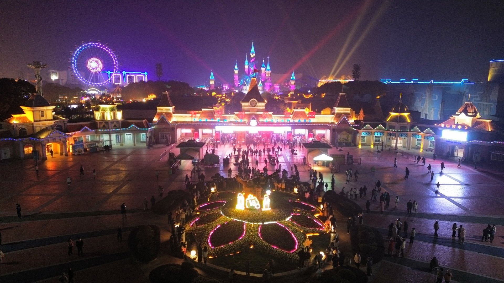

安徽旅游景点
探索安徽的美丽风光，感受自然的魅力和历史的厚重。
热门旅游景点
黄山

查看详情
景点介绍：
古称徽州，这里文风昌盛，有着“十家之村，不废诵读”之说，遍布儒香、书香。这里还有着奇伟俏丽、灵秀多姿的黄山。
必游理由：- 独特的地质构造，奇峰怪石林立
- 清澈见底的溪流与壮观瀑布
- 丰富的野生动植物资源，是摄影爱好者的天堂
黄山最佳出游时间是3-4月，9月-次年1月 黄山一年四季皆适宜出游， 但春季和秋季最适合游玩，这时候黄山的春秋季节气候宜人，不冷也不热，游人也并不如暑期多，景点基本全都开放。另外冬天的雪景集中在12月…
宏村

查看详情
景点介绍：
宏村景区是徽派古村中的代表，有“中国画里乡村”的美誉。来宏村一是看水利系统带来的水景，南湖、月沼是精华所在； 二是看建筑上的徽派三雕，砖雕、石雕、木雕，像剪纸一样精细，人文景观与自然景观很好地融为一体。
必游理由：- 春、秋两季最佳，特别是3月至4月，桃花、油菜花遍野盛放，吸引了众多摄影爱好者
- 10月至11月，秋色正浓，菊花金黄，秋叶火红。此外，宏村一天之内，清晨和傍晚的美景也实属上乘。
- 春光灿烂，桃花、油菜花依次盛放，宏村的水乡风貌开始散发出魅力，吸引各地游客前往这个皖南乡村观光、写生、摄影。
- 秋季亮点依然是各种时令花卉，特别是10-11月，菊花满地，秋叶火红，前往离宏村2公里的塔川，能看到不逊色于香山的景致。
九华山

查看详情
景点介绍：
九华山位于池州市东南处。唐开元年间（公元719年），新罗国（韩国）王子金乔觉来此修行， 因其生前逝后种种迹象酷似地藏，所以被认为是地藏菩萨应世，尊为金地藏，于是九华山成为地藏的道场， 与普陀山、五台山、峨眉山合为佛教四大名山。历代高僧肉身是九华山的一大特色，在常年湿润的气候下，高 僧圆寂后肉身能一直不腐化，非常神奇，现在可供朝拜的有五尊肉身。
必游理由：- 九华山一年四季适合出行，春秋为最佳旅游时机。
- 春季的九华山，云雾迷漫，春雨潇潇，在山上可以看到壮观非常的云海。
- 夏季的九华山树木丛生，百花盛放，气温适中，凉爽阴凉，适合避暑。
- 由于地理特征，九华山常年有雾，其中春秋两季更多。有时迷雾或低云和着毛毛雨，山峦时隐时现，云雾时涨时消，无比美妙。
全年 全天开放 --劳动节 06:00-21:00
徽州古城

查看详情
景点介绍：
徽州古城位于歙县的练江北岸，始建于秦朝，唐代以后成为古徽州府治所在地，汤显祖的一句“一生痴绝梦，无梦到徽州”使多少人对它魂牵梦绕， 城门、牌坊、以及府治特有的府衙，让游客依然能领略到古徽州府的遗风。
必游理由：- 古城的不少景点都是由许国石坊发散出去，往西可以去徽州府衙，于现代重修，仿造明代府衙的模样；往东可以参观歙县人陶行知的纪念馆； 往北可以参观徽园，不过徽园里都是仿古建筑。位于古城东北部的斗山街汇聚了徽派古民居、牌坊和古井，在青石板与鹅卵石铺就的古街上走走，非常有味道。
- 从瓮城出古城，过建于明弘治年间的石桥“太平桥”，到达练江南岸，这里有太白楼和新安碑园。太白楼为纪念李白而建，新安碑园里的明代的《余清斋帖》和《清鉴堂帖》， 喜欢书法的游客可以来看看。沿练江东行，建于北宋宣和二年（公元1119年）的长庆寺塔人迹罕至，但它给靠近的游客准备了真正的意外之喜，外部塔身的每一层都有彩色壁画， 因年久而变得模糊，远观是发现不了壁画的。
- 最后一个景点渔梁在古城以东2公里处，入口在练江北岸，所以看过长庆寺塔后要再次过太平桥回北岸，如果从南岸走，需走过渔梁坝，绕到紫阳桥那才能过河
芜湖方特欢乐世界

景点介绍：
查看详情
芜湖方特欢乐世界坐落于中国芜湖的长江之滨，是当前亚洲规模十分大的第四代主题公园，以科幻和动漫为特色，采用国际流行的理念和技术精心打造，很适合家庭亲子活动，是孩子们的天地，一个充满神奇的梦幻乐园。
必游理由：- 在春末夏初或初秋的时候是来这里游玩很好的时机
- 芜湖方特欢乐世界由渔人码头、太空世界、神秘河谷、维苏威火山、失落帝国、精灵山谷、西部传奇、恐龙半岛、海螺湾、嘟比农庄、儿童王国、水世界、火流星等16个主题项目区组成
- 是带领孩童游玩的好地方
每日9:00 - 17:30